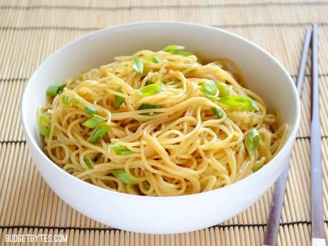

Garlic Noodles

Description
Ingredients
- 8 oz. angel hair pasta
- 4 cloves garlic
- 1/2 bunch green onions
- 4 tbsp butter
- 2 tsp soy sauce
- 1 tsp sesame oil
- 2 tbsp oyster sauce
Steps
- Combine oyster sauce, soy sauce and sesame oil into a bowl and stir.
- Boil a large pot of water and cook the noodles according to packaging instructions.
- Mince the garlic and slice the green onions.
- Melt butter in a large skillet and saute onions and garlic until fragrant.
- Drain pasta and add to skillet with oyster sauce mixture and stir well to coat.